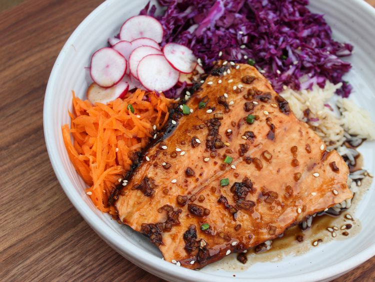

Home
Teriyaki Salmon Bowl

Description
For this teriyaki salmon bowl, salmon is baked for 15 minutes with a 4-ingredient homemade teriyaki sauce using soy sauce, brown sugar, garlic, and ginger, then served in a bowl with rice, red cabbage, carrots, and radishes.
Ingredients
- 1/4 cup low-sodium soy sauce
- 3 tablespoons brown sugar
- 1 small clove garlic, chopped
- 1 tablespoon chopped fresh ginger
- 1 (6 ounce) salmon filet
- 1/4 cup grated carrots
- 2 radishes, thinly sliced
- 1 cup shredded red cabbage
- 1 cup cooked rice
- 1 teaspoon sesame seeds (optional)
- 1 green onion, thinly sliced (optional)
Steps